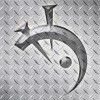
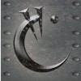
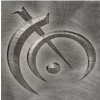
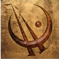
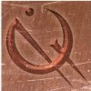
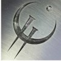
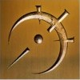
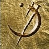
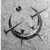

In the Mistborn world there is magic called Allmonancy. This magic allows an Allomancy to injest differnt metals to gain mythological abilities when they 'burn' the metal. There are 8 basic metals and 2 higher metals. Each metal is paired with another metal meant as is compliment/oppisite. The 8 basic metals can then be grouped into physical or mental metals meaning they either affect the physical world or the mind.
| Name | Type | Description |
|---|---|---|
|
Steel

|
Physical | When an Allomancer burns steel they see blue lines that point to near by metal. They gain the ability to push that metal directly away from them with their minds. |
|
Iron

|
Physical | Iron is the complement to Steel. When iron is burned blue lines also appear to an allomancer pointing to the nearby metals, but iron allows the user to pull the metals towords them instead of push. |
|
Tin
|
Physical | Tin enhances a persons senses allowing them to hear, feel, taste, and see more. This can help an allomancy see danger coming from further away, but can become a hinderance if one is bumbarded with to mush light or sound. |
|
Pewter

|
Physical | Pewter is the twin of tin it enhances and allomancers physical strength and apperance. This allows and alomancer to run farther faster, keep their balance, lift heavey weights, or even survive mortal wounds. |
|
Bronze

|
Mental | Burning bronze gives and allomancer the ability to sense other allomancers nearby who are burning metals. |
|
Copper

|
Mental | Copper is the compliment to bronze and allows an allomancy to hide their metal burning and the burning of others around them to hide their allomancy from someone burning bronze. |
|
Zinc

|
Mental | Zinc allows an allomancer to enhance the emotions of the people around them. The allomancer could make somone angry, happy, or scared. |
|
Brass

|
Mental | Brass is the compliment to zinc and helps and allomancer to dappen emotions. An allomancer can smother ones fear or suspition. |
|
Gold

|
Higher | Gold allows an allomancer to see who they might have been if they had made different choices in the past. This element is not seen as very usful. |
|
Atium

|
Higher | When burning atium an allomancer can see a few seconds into the future of a moving object. This includes people so an Allomancer is unbeatable in a fight if they see all your punches before you throw them. |
Sources
https://www.brandonsanderson.com/pages/the-mistborn-saga-the-original-trilogy
https://www.brandonsanderson.com/pages/hello-my-names-brandon